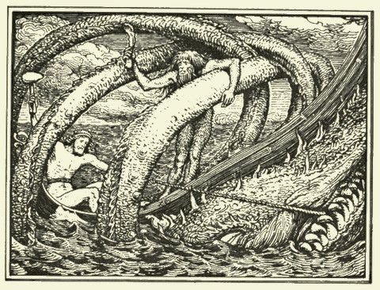

Computer instructions (pusher)
Grand Sumo Highlights Archive (maintainer)
List of Japanese Print books (contributor)
Woodside Astronomy and Calculus (volunteer)
Japanese Woodblock Print Search (contributor)
Reading: The Travels of Ibn Battutah (2016) abridged and edited by Tim Mackintosh-Smith, Mind of the Raven: Investigations and Adventures with Wolf-Birds (2007) Bernd Heinrich, Herodotus: The Histories (1954) newly translated and with an introduction by Aubrey De Sélincourt.
Listening: Bebop, Fela Kuti, King Gizzard & the Lizard Wizard, Tinariwen.
Watching: Orphans of the Sahara: Tuareg Return, Rebellion & Exile (2014) Al Jazeera English, Throne of Blood (1957) Akira Kurosawa and William Shakespeare, The Seventh Seal (1957) Ingmar Bergman, Grand Sumo, and Star Trek rodeo forever.
Recommended Reading: Lapham's Quarterly, Prophet (2012-17) Graham & Roy, The Autobiography of Malcolm X (1964) Alex Haley • Listening: In Our Time with Melvyn Bragg, Radio Fenriz, The Great 78 Project, Wardruna • Watching: The Hollow Crown (2012-16) BBC, The Iron Ministry 铁道 (2014) J.P. Sniadecki, Music is the Weapon (1982) Flori & Tchal-Gadjieff, Malcolm X (1972) Arnold Perl, The Great Dictator (1940) Charlie Chaplin.
Traveling: London (2017, 2002, 2001) • Shanghai (2016, 2015, 2006) • Reykjavik (2015) • New Delhi, Jaipur, Agra (2014) • Kyoto (2013) • Tokyo (2013, 2009) • Paris (2012, 2001) • Amsterdam (2011) • Istanbul, Cappadocia, Konya, Antalya, Pamukkale, Izmir (2010) • Lisbon (2008) • Madrid, Granada, Cordoba, Seville (2008) • St. Petersburg, Moscow (2007) • Lhasa (2006) • Suzhou, Hangzhou, Putuoshan, Chengdu (2006) • Beijing (2005) • Hong Kong (2004) • Dublin (2003) • Barcelona, Dusseldorf (2002) • Brussels, Gimmelwald (1996).

You can reach me by my first name at siznax.net.
View source.
*